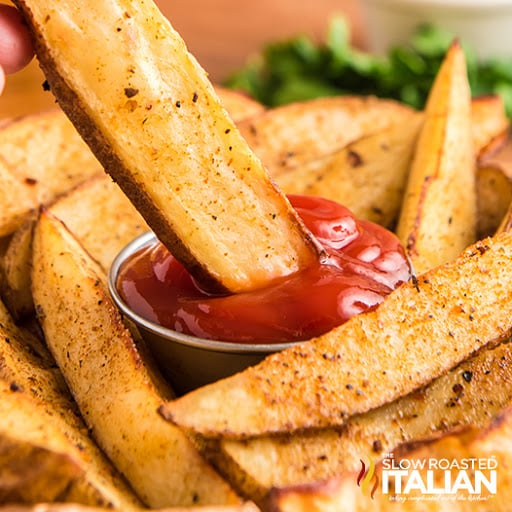

Home
French Fries

Description
Red Robin Fries are crispy on the outside and fluffy on the inside with a
flavor that will make your mouth water! Make homemade, fresh-cut Red Robin
steak fries in under an hour. Now you can make your own bottomless steak
fries right at home!
Ingredients
- Preheat oven to 400° F.
-
Place the potatoes in a large bowl. Toss with vegetable oil. Sprinkle in
1/2 tablespoon seasoning, toss well to coat.
-
On 2 baking sheets, lay fries out in a single layer (not touching).
Sprinkle the remaining 1/2 tablespoon (more or less to taste) over
fries.
-
Bake for approximately 40 minutes, flip fries half way through. I also
rotated the baking sheets, top to bottom and bottom to top.
- Serve and enjoy!!